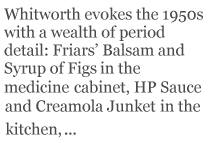

Although I enjoy John Whitworth’s other books, my favourite is Landscape With Small Humans, published in 1993. It was one of the best, perhaps the best, book of new poems published here in the 1990s, and it has never received as much attention as it deserves.
The 52 poems form an autobiographical sequence, beginning in Hatch End, an outer London suburb, and continuing in Edinburgh, after the family moved to Scotland. Born in 1945, Whitworth evokes the 1950s with a wealth of period detail: Friars’ Balsam and Syrup of Figs in the medicine cabinet, HP Sauce and Creamola Junket in the kitchen, Mrs Dale’s Diaries and Children’s Hour on the radio and, for a cricket-mad boy, “watching Peter May”. He mentions some foreign neighbours whocooked with exotic, unfamiliar ingredients like yoghourt and paprika. If you are old enough (and I am) to remember the 1950s, all this is irresistible.
The poems are all variations on a 20-line form, with a 21st and even a 22nd line thrown in from time to time. Written with Whitworth’s customary technical skill, they are a joy to read. There is humour, of course. Every time I re-read the book I find myself laughing out loud at certain points. At the end of “Home Entertainments”, for example, a poem about a girl called Coral who introduced John and his friend to games of crime and punishment, always culminating in a mock execution. “These days,” he comments, “where’s the scope, /With videos and such, for games like that?”
The first half of “Landscape with Small Humans” is an account of a happy childhood. When the story moves to Scotland it becomes darker: “Those Edinburgh Scots were hard and glacial/ They called me shitface but the thing was racial”. There’s quite a lot about bullying — bullying by boys and, in one poem, by a teacher, though the victim here was not Whitworth but someone else.
There’s adolescent sex, too, in several poems, including the wonderfully titled “My Short and Glorious Career as a Tart”. The boy is surviving. He makes some friends and he gets picked for a cricket team: “And to be young was (sometimes) very heaven/ In Colin’s Second Junior X1.”
Then, in the last two heartrending poems, disaster strikes. While he is out at Sunday School his mother is taken ill and rushed to hospital. He never sees her again: “We did not get to go,/ And how she looked at last I cannot say./ They told us what they thought we ought to know.” A tragic ending to a superb and thoroughly engaging book.
Wendy Cope is one of Britain’s most successful and best-known poets. A former teacher, she has published three collections of her work — Making Cocoa for Kingsley Amis (1986), Serious Concerns (1992) and If I Don’t Know (2001) — and has edited several anthologies.